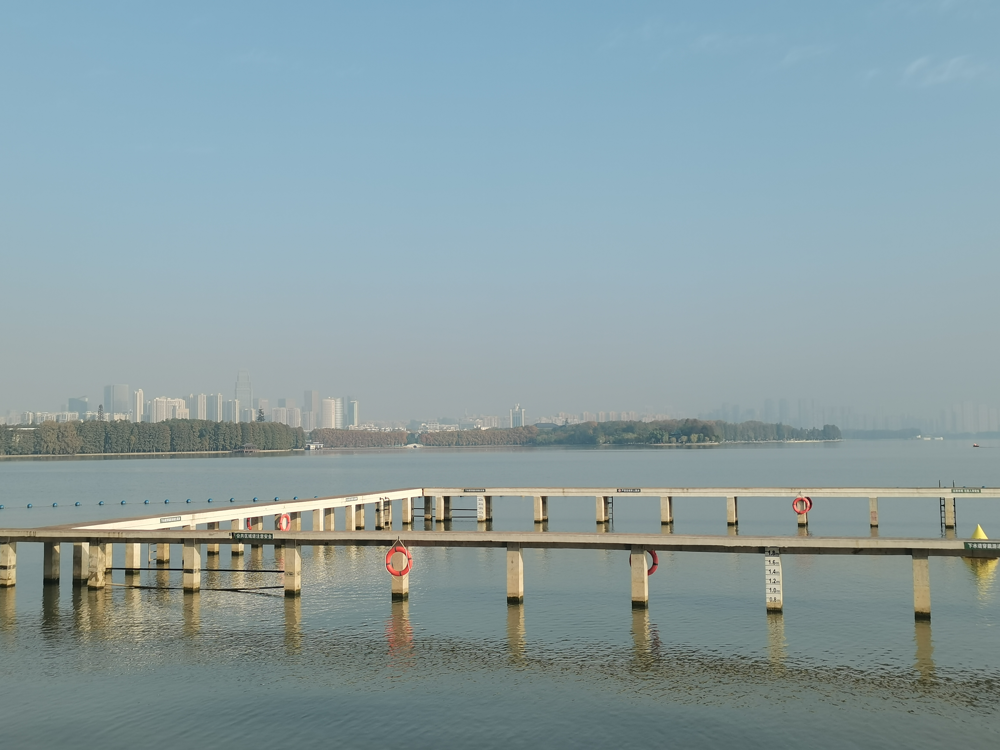

Academic Background
2015-2019
Bachelor's Degree
Chengdu University of Technology, College of Earth and Planetary Sciences, Surveying and Mapping Engineering
2019-2021
Master's Degree
 XXX University, Remote Sensing and Surveying Engineering
XXX University, Remote Sensing and Surveying Engineering
Research Interests
Main research areas include UAV mapping, LiDAR data processing, and GIS applications in environmental monitoring.
